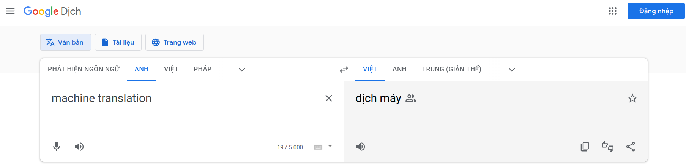

Bài toán Machine Translation
Giới thiệu
Machine Translation (dịch máy) là bài toán rất phổ biến trong lĩnh vực NLP. Sản phẩm Google Dịch mà chúng ta vẫn dùng hằng ngày chính là một mô hình dịch máy khá tốt và nó được huấn luyện bởi Google 😀

Thật ra bài toán Machine Translation đã ra đời từ rất lâu. Tất nhiên rồi, vì nó đóng vai trò rất quan trọng trong giao tiếp. Kể từ khi Statistical Machine Learning (máy học thống kê) rồi cho đến Deep Learning phát triển mạnh thì dần càng có nhiều nghiên cứu về Machine Translation được thực hiện và độ chính xác của các mô hình đã được cải thiện một cách đáng kể.
Nguồn: FreeCodeCamp
Rule-based Machine Translation
Ban đầu, Machine Translation được giải quyết bằng cách dựa vào những cách như dịch trực tiếp từng từ một dựa vào từ điển, sau đó là dịch từng cụm, chuyển từ các từ hay cụm từ thành một dạng biểu diễn trung gian (ví dụ như ảnh), rồi từ đó tính ra từ của ngôn ngữ khác. Những phương pháp này gọi chung là Rule-based Machine Translation. Tất nhiên là dịch như vậy thì độ chính xác sẽ khó mà cao được rồi 😀
Minh họa cho Rule-based Machine Translation
Nguồn: FreeCodeCamp
Statistical Machine Translation
Với Statistical Machine Translation (SMT), người ta xây dựng khá nhiều các phương pháp dựa trên cơ sở là các mô hình thống kê. Ta có thể kể ra một vài phương pháp như Word-based (bag-of-words, word-alignment), Phase-based, Syntax-based.
Lấy ví dụ với bài toán dịch Tiếng Anh sang Tiếng Việt. Với câu input Tiếng Anh là $x$, ta sẽ tìm câu Tiếng Việt $y_0$ sao cho xác suất $y_0$ là câu dịch của $x$ là cao nhất:
$$ y_0 = \argmax_{y} P(y|x) $$
Sử dụng quy tắc Bayes, ta có
$$ P(y|x)= P(x|y) P(y) $$
Do đó, trong mô hình SMT, ta sẽ có sự góp mặt của hai thành phần: Translation Model (cho $P(x|y)$) và Language Model (cho $P(y)$)
- Translation Model (TM) liên quan đến việc dịch các từ và cụm từ giữa hai ngôn ngữ (fidelity - sự chính xác trong dịch thuật). Để huấn luyện TM thì ta cần sử dụng tập dữ liệu “song ngữ”, tức là tập các cặp câu Anh-Việt tương ứng. Kỹ thuật thường được dùng trong huấn luyện TM là word alignment. Mình sẽ không đề cập đến nó ở trong bài viết này 😀
- Language Model (LM) sẽ tập trung vào sự trôi chảy của câu được dịch ra (fluency). Để huấn luyện LM thì ta chỉ cần dùng tập dữ liệu đơn ngữ. Có thể kể đến một số cách huấn luyện cơ bản như là Mô hình Markov (thuần túy dựa vào xác suất và thống kê), hoặc là về sau thì có thêm Recurrent Neural Network.
Translation Malde và Language Model
Nguồn: VietAI
Để sử dụng mô hình SMT trong thực tế, tất nhiên là ta không thể đi thử toàn bộ câu output $y$ để tính xác suất rồi so sánh được. Ta sẽ sử dung một thuật toán heuristic search để tìm ra câu dịch phù hợp.
Cho đến trước năm 2016 thì Google Dịch vẫn sử dụng mô hình SMT, trước khi nó chuyển hoàn toàn sang Neural Machine Translation (phần kế tiếp). Ta có thể liệt kê một số hạn chế của SMT như sau:
- Hệ thống thật sự sẽ rất phức tạp với nhiều thành phần tách rời nhau
- Cần thực hiện quá trình feature engineering rất nhiều để có thể nắm bắt được đặc trưng của từng ngôn ngữ
- Chi phí duy trì và phát triển rất tốn kém.
Neural Machine Translation
Khi Deep Learning dần phát triển mạnh, ta có nhiều mô hình được xây dựng để giải quyết bài toán Machine Translation. Chúng được gọi chung là Neural Machine Translation (NMT)
Minh họa cho các mô hình trong nhóm Neural Machine Translation
Nguồn: FreeCodeCamp
Mục đích của Machine Translation là ta đi dịch một văn bản từ ngôn ngữ X sang ngôn ngữ Y, tức là input của bài toán này là một chuỗi và output cũng là một chuỗi. Và với các bài toán có dữ liệu dạng chuỗi thì ta thường nghĩ ngay đến Recurrent Neural Network!
Loại mô hình RNN thường được sử dụng trong bài toán này là many-to-many. Trong bài viết về RNN, mình có đề cập đến hai dạng khác nhau của mô hình many-to-many như sau:
- Xét dạng mô hình many-to-many phía bên phải. Ta thấy rằng nó đang hoạt động theo kiểu như dịch dần từng chữ một, và có vẻ đây không phải là cách mà con người sử dụng để dịch văn bản 😀
- Đối với phía bên trái, mô hình hoạt động theo hướng là đọc hiểu toàn bộ input rồi sau đó mới bắt đầu dịch. Nghe rất hợp lý! Dạng kiến trúc này thường được gọi là Encoder-Decoder, trong đó:
- Encoder sẽ rút trích các đặc trưng ở trong câu input. Sau khi hoàn thành, nó sẽ chuyển thông tin này cho decoder.
- Decoder là một Language Model sinh ra các từ cho câu output, dựa trên các từ đã sinh trước đó và lượng thông tin đến từ encoder.
Nếu mô tả ngắn gọn thì ta sẽ có sơ đồ như sau:
Sơ đồ của kiến trúc Encoder-Decoder
Nguồn: Dive into DL
Cụ thể hơn một chút với dạng mô hình RNN Encoder-Decoder, “thông tin” mà encoder gửi cho decoder chính là hidden state của giai đoạn cuối cùng trong encoder.
Minh họa mô hình RNN Encoder-Decoder
Nguồn: VietAI
Ta cũng có thể xem NMT như là một SMT với khả năng tính toán trực tiếp xác suất $P(y|x)$:
$$ P(y|x) = P(y_1|x) \times P(y_2|y_1, x) \times \cdots P(y_T | y_{T -1}, \cdots, y_1, x) $$
So với SMT, NMT có một số điểm mạnh hơn như sau:
- Hiệu năng tốt hơn: Dịch chính xác, trôi chảy hơn và câu văn đa dạng hơn
- Dễ tối ưu mô hình hơn (huấn luyện end-to-end)
- Con người không cần phải can thiệp quá nhiều vào thao tác feature engineering
Bên cạnh đó, NMT cũng có một hạn chế quan trọng là mô hình này khó để “có thể giải thích được”, các hoạt động bên traong như là một blackbox (xem thêm bài viết về XAI tại đây).
Mô hình Sequence to Sequence
Sequence to Sequence (seq2seq) là mô hình dịch máy có kiến trúc dạng Encoder-Decoder. Nó được các nhà nghiên cứu tại Google nghiên cứu và công bố vào năm 2016, cũng là năm mà Google Dịch chuyển từ SMT sang NMT 😀
Seq2seq đơn giản
Ở phiên bản đơn giản nhất của seq2seq, kiến trúc mô hình sẽ giống với hình minh họa của Encoder-Decoder ở trên. Trong đó, ta có sử dụng embedding layer và các cell có thể là RNN cell, LSTM cell hoặc GRU cell (xem thêm bài viết về LSTM và GRU tại đây). Ta có thể mô tả kiến trúc này như hình bên dưới:
Kiến trúc Seq2seq đơn giản
Nguồn: VietAI
- Lưu ý. Trong Seq2seq, ta hoàn toàn có thể dùng Bidirectional RNN. Khi đó, lượng “thông tin”, hay là trạng thái S mà encoder gửi cho decoder có thể được tính bằng trung bình của trạng thái cuối cùng của mỗi hướng truyền.
Nếu xét về mặt công thức của Encoder và Decoder thì nó sẽ giống với trong RNN thông thường. Chỉ đặc biệt ở một phần là thời điểm đầu tiên của Decoder sẽ có trạng thái ẩn truyền vào là khác 0 (nhận được từ Encoder).
Deep Seq2seq
Từ RNN, ta có Deep RNN. Vậy thì với Seq2seq cũng như thế 😀 Deep Seq2seq là dạng kiến trúc mà Encoder và Decoder có nhiều recurrent layer liên tiếp nhau. Khi đó, số lượng trạng thái mà Encoder truyền qua Decoder cũng sẽ nhiều lên. Ví dụ như sau:
Minh họa kiến trúc Deep Seq2seq
Nguồn: VietAI
Để ý rằng, recurrent layer thứ $i$ trong Decoder sẽ nhận trạng thái đầu từ recurrent layer tương ứng của Encoder.
Chỉ bằng cách đơn giản là chồng thêm nhiều recurrent layer trong kiến trúc mô hình, Deep Seq2seq đã đạt độ hiệu quả rất vượt trội 😀
Kỹ thuật Teacher Forcing và đảo ngược câu input
Đầu tiên, ta thấy rằng để huấn luyện được một mô hình Seq2seq thì ta cần có input cho cả 2 thành phần là Encoder và Decoder. Với Encoder thì chắc chắn input chính là đoạn văn bản cần dịch. Còn Decoder thì sao?
Input của Decoder được tạo ra bằng một kỹ thuật gọi là Teacher Forcing. Ví dụ, câu văn bản input là “Hôm nay tôi đi học” và label của nó là “Today I go to school”. Khi đó, input và label của Decoder sẽ là:
- Input: “Today I go to”
- Label: “I go to school”
Nhìn vào thì ta sẽ thấy ngay ý tưởng của Teacher Forcing 😀
- Đối với quá trình dịch (hay là dự đoán) thì Decoder hoạt động giống với mô hình RNN thông thường: Sử dụng output của thời điểm liền trước để làm input cho thời điểm hiện tại
Bên cạnh Teacher Forcing, các tác giả của Seq2seq còn sử dụng một kỹ thuật để giúp Seq2seq đạt được một hiệu năng ấn tượng là đảo ngược câu input (label thì giữ nguyên). Nghe rất ảo nhưng… it works! Ví dụ:
Minh họa kỹ thuật đảo ngược câu input trong Seq2seq
Nguồn: VietAI
Dù không đưa ra được lời giải thích chặt chẽ là vì sao kỹ thuật này lại mang đến kết quả rất tốt nhưng các tác giả của Seq2seq cũng có nêu ra một số lí do thiên về phần trực giác. Lí do chính là vì nhờ cách làm này mà mô hình có thể học được thêm các mối quan hệ phụ thuộc giữa các từ trong câu input và label.
- Khi ta “dịch xuôi”, với những input có độ dài lớn thì sau khi Encoder tính toán xong, đến với Decoder thì Decoder đang đi dịch cho một từ cách thời điểm hiện tại một khoảng cách rất xa, và với các từ sau cũng vậy (khoảng cách của từng cặp là xấp xỉ nhau).
- Trong khi đó, nếu đảo ngược input thì trung bình khoảng cách những cặp từ sẽ gần như không đổi nhưng sẽ có những cặp ở rất gần nhau. Từ đó nó góp phần làm giảm hiện tượng vanishing gradient (hay còn gọi tên khác là time lag mà các tác giả sử dụng trong paper).
Các ứng dụng khác của Seq2seq
Dù được phát triển cho bài toán Machine Translation được Seq2seq có thể được áp dụng vào rất nhiều bài toán khác nhau, và chúng đều là các bài toán rất thú vị và liên quan đến nhiều mảng khác nhau trong Deep Learning. Trong đó có hai bài toán nổi bật là Image Captioning và Speech Recognition.
Nhìn vào kiến trúc của Seq2seq thì ta có nhận xét rằng nếu Encoder đủ tốt để rút trích các đặc trưng từ input và truyền vào cho Decoder thì Decoder có thể làm rất nhiều điều.
- Đối với Image Captioning, Encoder sẽ rút trích đặc trưng của ảnh và truyền vector này vào Decoder là ta đã có khả năng sinh ra câu mô tả cho tấm ảnh đó
Image Captioning sử dụng ý tưởng Seq2seq
Nguồn: Analytics Vidhya
- Speech Recognition là bài toán sinh ra đoạn văn bản được nói lên trong file âm thanh. Như vậy, chỉ cần một Encoder rút trích được đặc trưng của âm thanh rồi truyền vào Decoder là ta đã có thể có một giải pháp cho bài toán này.
Speech Recognition sử dụng ý tưởng Seq2seq
Nguồn: Research Gate
Độ đo BLEU
Để biết được một mô hình Machine Translation có hoạt động đủ tốt hay không thì ta cần có một độ đo. BLEU (Bilingual Evaluation Understudy) chính là một trong những độ đo cơ bản và phổ biến nhất.
BLEU sẽ đánh giá một câu dịch dựa theo các n-grams của câu đó với các câu label có trong tập dữ liệu. Ví dụ:
-
Câu input là $x$ = “Con mèo nằm ở trên bàn”
Output của mô hình là $\hat{y}$ = “The cat on table”
- 1-grams (hay là unigrams): The, cat, on, table
- 2-grams (bigrams): The cat, cat on, on table
- Tương tự với các giá trị n khác
-
Giả sử input $x$ có hai câu label trong tập dữ liệu:
- $o_1$ = “The cat is on a table”
- $o_2$ = “The cat lies on a desk”
Đặt $N_0$ là tập các $n_0$-grams của câu output $\hat{y}$. Khi đó, giá trị điểm BLEU (hay là BLEU score) của $\hat{y}$ tính theo $n_0$-grams là
$$ s_n = \frac{\sum_{n_0\text{-gram} \in N_0} \text{count}_{\text{clip}}(n_0\text{-gram})}{\sum_{n_0\text{-gram} \in N_0} \text{count}(n_0\text{-gram})} $$
trong đó:
- Tử số được tính theo các câu label của input $x$, với $\text{count}_{\text{clip}} (n_0\text{-gram})$ là số lần xuất hiện lớn nhất của gram này ở trong các câu label.
- Với ví dụ trên, ta có hai câu label là $o_1$ và $o_2$. Giả sử xét một 2-gram “The cat” thì gram này đều xuất hiện 1 lần ở trong mỗi câu label nên giá trị $\text{count}_\text{clip}$ của nó là 1.
- Mẫu số được tính tại chính câu output $\hat{y}$, với $\text{count}(n_0\text{-gram})$ là số lần xuất hiện của gram này ở trong câu output.
Như vậy, tất nhiên là $s_n \leq 1$ và $s_n$ càng lớn thì câu output $\hat{y}$ càng “gần” với các câu label trong tập dữ liệu.
Để tính được điểm BLEU thật sự của câu $\hat{y}$, ta sẽ tính $s_n$ với một số giá trị $n$ và sau đó tính trung bình theo một công thức khá đặc biệt:
$$ BLEU(\hat{y}) = BP \times \exp \left ( \frac{1}{m} \sum_{n=1}^m s_n \right ) $$
trong đó $BP$ là BLEU penalties, với ý nghĩa là nếu mô hình cho ra những câu output quá ngắn (ngắn hơn các câu trong tập dữ liệu) thì sẽ bị phạt (giảm điểm BLEU):
$$ \begin{aligned} BP = \left\{\begin{matrix} 1, & \text{if } len(\hat{y}) > \min(len(o_i)) \\ \exp \left ( 1 - \frac{\min(len(o_i))}{len(\hat{y})} \right ), & \text{otherwise} \end{matrix}\right. \end{aligned} $$
Vì sao cần phải có BLEU penalties?
- Để ý rằng, nếu mô hình chỉ cho ra một câu output chứa đúng một gram luôn xuất hiện trong các câu label thì ta luôn có $s_n = 1$ 😀 Nếu không phạt thì hỏng!
Tài liệu tham khảo
- FreeCodeCamp, A history of machine translation from the Cold War to deep learning
- Dive into Deep Learning, Encoder-Decoder Seq2Seq for Machine Translation
- VietAI, Deep Learning Foundation Course 2019, Lecture 14 - Machine Translation and Sequence to Sequence model
- DeepLearning.AI, Deep Learning Specialization, 5. Sequence Models